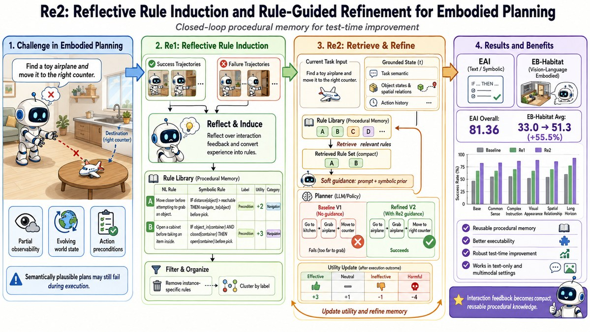
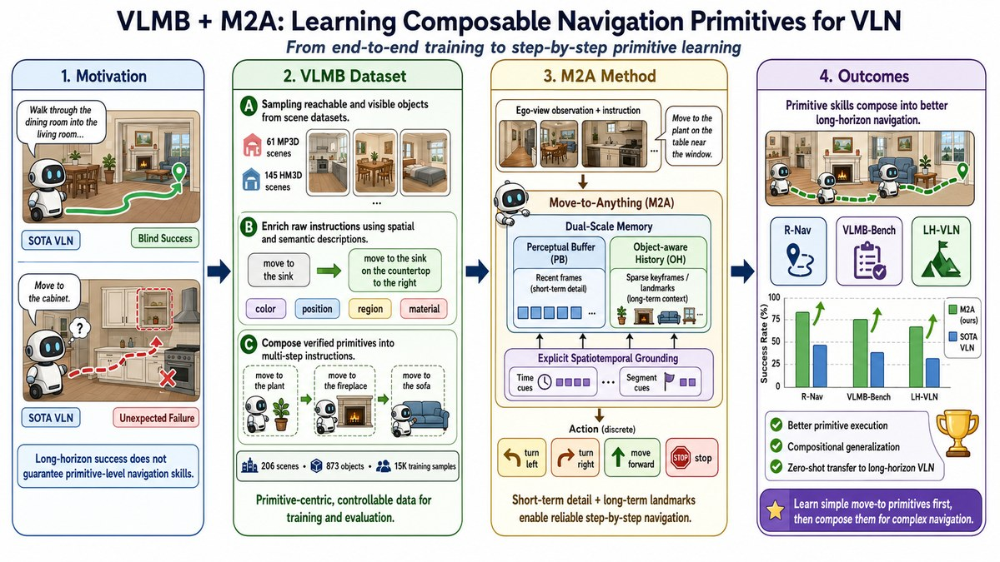
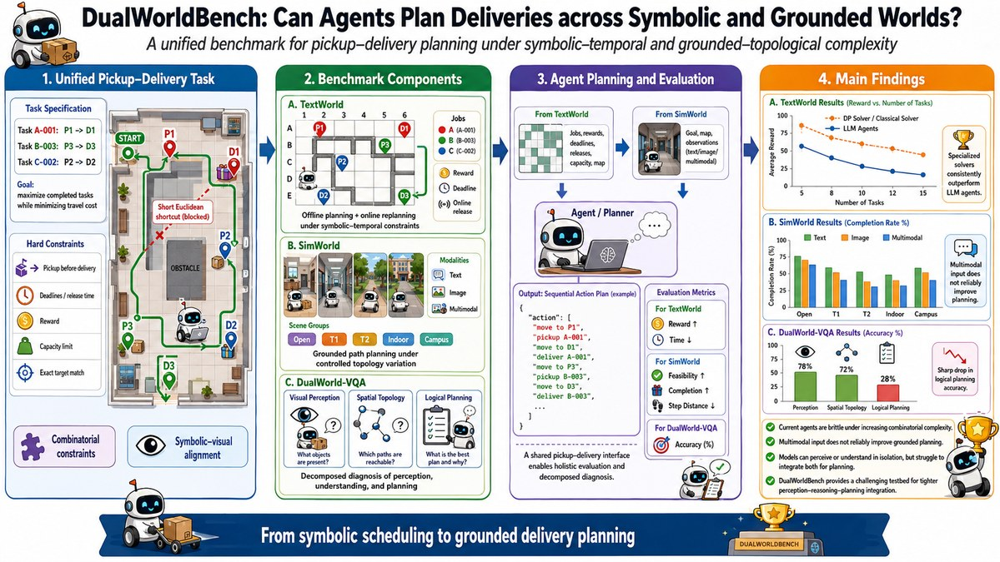

About Me
I am a Ph.D. student in the School of Intelligence Science and Technology at
Nanjing University (Suzhou Campus)
and a member of the LAMDA Group led by Zhi-Hua Zhou. My research focuses
on embodied agents that can plan, act, and learn under real physical constraints.
Education
2025.09 - Present
Ph.D., Computer Science and Technology
Nanjing University
2022.09 - 2025.04
M.S., Control Theory and Control Engineering
Nanjing University of Science and Technology
2018.09 - 2022.06
B.S., Automation
Nanjing University of Science and Technology
News
Scroll for more ↓
Sep 2026
DualWorldBench has been accepted to NeurIPS 2026 !
Sep 2026
We released HarnessVLN
Aug 2026
Two papers have been accepted to EMNLP 2026 !
Jul 2026
Move2Anything (M2A) has been accepted to the OWN Workshop at RSS 2026 !
May 2026
We won the championship in the CVPR 2026 EmbodiedBench Challenge
May 2026
Re²Agent has been accepted to the FMEA Workshop at CVPR 2026 !
May 2026
One paper has been accepted to ICML 2026 !
Research Map
Building embodied agents that plan, act, and learn in the physical world.
Research directions
Select a topic to explore
Research focus
Embodied Agent
Plan · Act · Learn
Vision-Language
Composable navigation primitives
Task & Motion
Rule induction & test-time refinement
Robotics
Perception, planning & control
Overview
Embodied Agent
My current research studies embodied agents that can plan, act, and refine decisions under real physical constraints.
Research in practice / Internships
Jun — Dec 2025
Microsoft Research Vision-language navigation
Jun 2026 — Present Current
AgiBot Robotics systems & deployment
Publications
Selected
All by date

Under Review
Under review
Most Innovation Award
FMEA Workshop @ CVPR 2026 Poster
Re²: Reflective Rule Induction and Rule-Guided Refinement for Embodied Planning
Yang Chen Hong-Jie You , Jie-Jing Shao , Xiao-Wen Yang , Ming Yang , Yu-Feng Li , Lan-Zhe Guo
FMEA Workshop @ CVPR 2026 · Poster. Main submission under review.
A closed-loop embodied planning framework with trajectory
reflection, rule induction, rule retrieval, and test-time correction.

Under Review
Under review
VLN
OWN Workshop @ RSS 2026
From End-to-End to Step-by-Step: Learning Composable Navigation Primitives for Vision-Language Navigation
Yang Chen Xiaohan Yi , Danyang Peng , Zhuoxia Wang , Shi-Yu Tian , Jiang Bian , Lan-Zhe Guo
OWN Workshop @ RSS 2026. Main submission under review.
Website

NeurIPS 2026
NeurIPS 2026
Benchmark
DualWorldBench: Can Agents Plan Deliveries across Symbolic and Grounded Worlds?
Yang Chen Bin Wen , Danyang Peng , Hong-Jie You , Ziqiao Shang , Lan-Zhe Guo
NeurIPS 2026 , accepted.
Website
DualWorldBench: Can Agents Plan Deliveries across Symbolic and Grounded Worlds?
NeurIPS 2026 , accepted.
From End-to-End to Step-by-Step: Learning Composable Navigation Primitives for Vision-Language Navigation
Under review. OWN Workshop @ RSS 2026.
Re²: Reflective Rule Induction and Rule-Guided Refinement for Embodied Planning
Under review. FMEA Workshop @ CVPR 2026 Poster. NeurIPS 2025 EAI Challenge Most Innovation Award.
LoPhyDA: Low-Rank Tensor and Physics Gradient Guided Diffusion for Atmospheric Data Assimilation
ICML 2026 , accepted.
AMSC: Adaptive Masking and Structure-Constraint Learning for Domain Adaptive Semantic Segmentation Under Adverse Conditions
IEEE Signal Processing Letters , 2023.
Awards
CVPR 2026 EmbodiedBench Challenge , 1st placeNeurIPS 2025 EAI Competition Most Innovation Award
Microsoft Global Hackathon 2025 Embodied AI for Everyday Impact
Graduate National Scholarship, ranked 5 / 385
First-class Graduate Academic Scholarship and Outstanding Graduate honors
2023 Zhaoying Cup Intelligent Unmanned Systems Application Challenge, national second prize
Academic Service
Reviewer
NeurIPS 2026, ICML 2026, IJCAI 2025/2026, IEEE Signal Processing Letters.
Teaching Assistant
Introduction to Artificial Intelligence @ Nanjing University
Spring 2026 .
Research areas
MLLM agents, vision-language navigation, robotic task and motion planning.